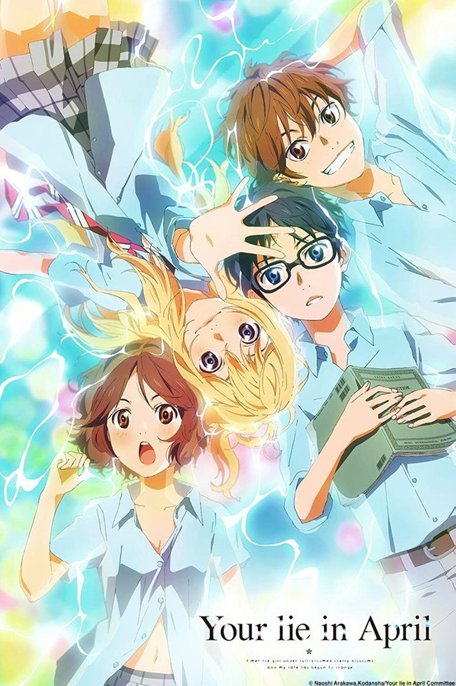
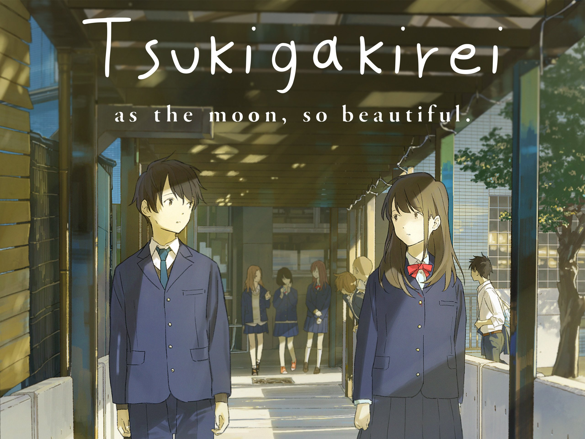
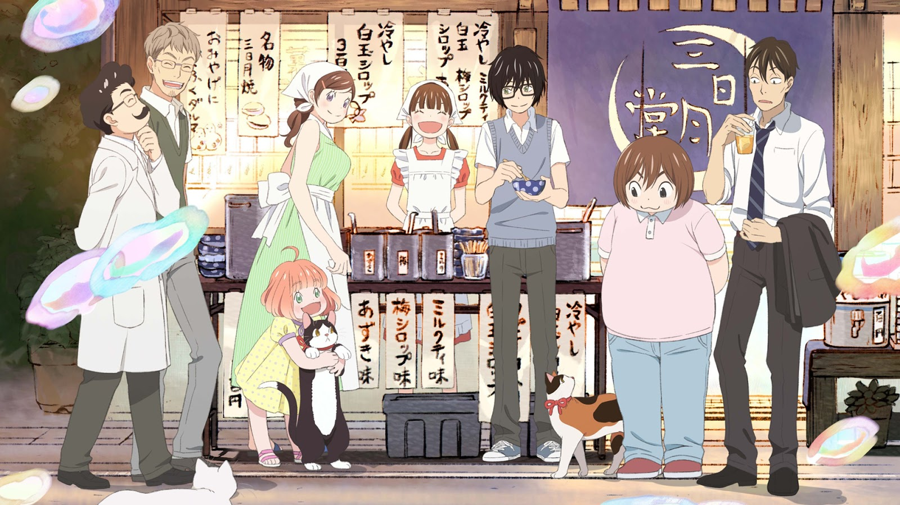

Top 5 Favorites!!
- Your Lie in April
Your Lie in April was one of the first that connected with me on an emotional level. It definitely set a standard for me when it comes to anime as a medium and also made me ugly cry.
- Tsuki ga Kirei
Following the adolescent love trend, Tsuki ga Kirei is an anime that makes you want to kick your feet up in the air and cringe uncontrollably. Nevertheless I was invested in every episode, and it has to be one of the cutest anime I've watched.
- Run with the Wind

A motivational anime that is expressed by great characters. This was recommended to me by a friend and quickly became one of my favorite anime.
- March comes in like a Lion
Theres too much to unpack with this anime, March comes in like a Lion is about the relationships that you make through out life and competitiveness around the game shogi. Tackling human flaws, March comes in like a Lion lent me numerous perspectives while providing me with a comfortable show.
- Violet Evergarden

Violet Evergarden is a beautiful series that hit me in the feels too many times then I can count. With only 12 episodes, it's pretty short but each episode becomes an important piece of progression to the main character, Violet's development that you can't help but be attached to.